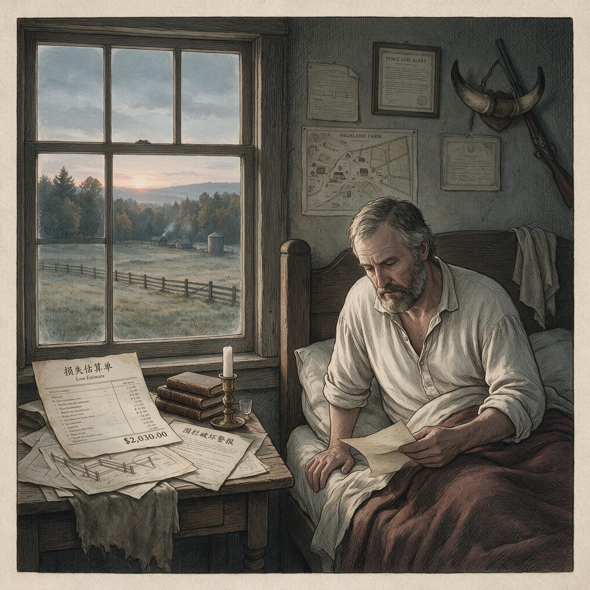

第 20 章
野猪共和国的一日
根据档案记载，克劳福德于闹铃响起前便已苏醒。其并未起身，而是先侧耳倾听北面围栏方向传来的动静。声响轻微，系镀锌铁丝在断裂塑料桩孔中来回滑动所产生的摩擦声。
连续第三夜。他闭了闭眼，在脑子里把损失估算了一遍，然后伸手去拿床头柜上的手机。手机解锁后，农场管理应用自动亮起。昨晚的“损害日志”还停留在一条未同步的记录上：三天前，西侧围栏被拱开一个两米宽的缺口，半英亩冬小麦被连根翻起。他当时写下的估计损失是四百一十美元，包括杂草种子、补种人工和一根断裂的角柱。

农场主清晨查看手机上的围栏破坏警报
AI 生成插图，非史实影像。
现在这条记录旁边多了一个橙色提示，意思是“检测到类似损害重复发生，可能触发县农业推广署的批量报告”。他没有点开提示。
他点开的是新报告。“肇事物种”下拉栏已经自动停在“野猪”。他只输入了位置、面积和围栏长度，应用里就弹出两条建议条目：“栅栏修复：三百二十美元”和“周末猎团收入：三百美元”。第一条是过去十二个月的平均报价。第二条是他去年秋天开通“付费狩猎”广告位之后，系统根据成交量自动生成的预估。
他放下手机，穿上靴子，从门后挂钩上取下头灯。推土机钥匙在碗里，但他没有拿。四分之一英里外的南界围栏，不需要开车。路上有露水，草叶把裤脚打湿到膝弯。他走得不快。
他知道那里会有什么。缺口比想象中浅。不是母猪带仔的那一队，是一群未成年的公猪，五六只的样子，楔形蹄印从几棵山核桃树后面一路斜插过来，在围栏前集中，然后不见了。镀锌铁丝被从最下面两行的位置顶开，塑料桩根部的螺纹被硬生生拔出来，断成三截。土里有几撮灰黑色硬毛，短而粗，根部发白。他用靴尖拨开一块翻起的草皮，下面没有根系了，一整片被翻了过去，像用旋耕机打过一样。
他蹲下来，把应用打开，对准损坏部位。镜头自动识别出“围栏破坏”，建议填入长度“二点四米”。他手动改成“二点一米”。在“估计损失”栏输入三百二十美元。这个数字他已经很熟了。
然后他点开“预约猎手”页面。页面变了。上一季度，系统会根据他输入的损失类型推荐三到四名附近的付费猎手。现在是直接推送。
第一位永远是“孤星狩猎向导服务”，联系人雷·米切尔，响应时间显示“平均三小时，覆盖范围八十英里”。后面还有“双R猎猪服务”“三角牧场清除队”。三家的报价都标着“免费”——那是明面。真正的收费在私信里谈。克劳福德点进雷的头像，上面有一行小字：“本周已有十一次地面巡逻任务。下周末可安排猎团，预估收入分成：二百八十至三百二十美元。”
他拨了过去。电话铃响到第五声时，那边接起来。先是一声短促的犬吠，然后是雷·米切尔沙哑的声音，混着轰隆隆的柴油机怠速。“约翰。怎么样，又是南边那一段？”克劳福德没有问他是怎么猜到的。那个APP会把农场的损害日志同步给注册猎手，这是默认设置。“周六晚。”克劳福德说。“行。几个人？”
“四个。大概多久能清掉？”
“这种小的，一两夜。你配合把投喂点移一下，别让它们往溪边去。上次那个位置太近了，夜里不打灯看不见。”
“好。”克劳福德说。挂断之后，他站在围栏缺口前，用手机拍了一张全景照片，上传到“损害日志”的附件栏。照片下面自动弹出一行说明：“已检测到该农场加入‘县级综合野猪管控计划’。您的报告将用于州土地局季度汇总。”他没有往下滑动。他返回主页面，看到“本月直报损失累计”已经跳到了八百七十美元。旁边是另一行灰色小字：“付费猎团收入累计：六百五十美元。”
他盯了这两行数字几秒钟，然后锁屏，开始把断裂的塑料桩从土里拔出来。
拔桩的时候，电话又响了。是他妻子。她问他早饭想吃什么。他说随便。她说冰箱里有香肠，问他是不是又去南边了。他说是。她说玉米和燕麦粉都有，微波炉热四十秒。他“嗯”了一声，把断桩捏在手里，站直身子。
东方开始泛白，能看清远处一条野猪沿沟渠边缘跑过的影子。它跑得很快，背脊几乎贴着地面，一眨眼就消失在灌木丛里。
他往回走的时候，那个APP弹出一条新的推送，标题是“您的县本季度野猪活跃指数上升百分之十二”。他左滑，把这条推送划掉了。---
同一时刻，大约六点四十分，华盛顿特区的天空还没有放亮。农业部南楼七层的一间办公室已经亮起日光灯，冷白的光铺满一张堆满文件的L形桌面。
梅根·萨特把眼镜摘下来，揉了揉鼻梁两侧被镜架压出的红痕。屏幕上是一份尚未保存的证词草稿，文件名是“FY2035_野猪防控资金使用效率_众议院拨款委员会_初稿_2024年3月12日”。光标停在倒数第二段，闪烁的位置正好在一句反复修改了六遍的话中间。
那句话现在读作：“项目在遏制种群增长方面取得了显著进展。”此前的版本分别是“显著成效”“阶段性进展”“初步但可验证的积极趋势”“在多数实施县观察到种群密度下降”“在部分实施县观察到种群密度下降但统计置信度有限”，以及最早的一版，只写了一半就被删掉的“项目在遏制种群增长方面取得了显著进展，但该进展存在于高度局部和短期的时间片段内”。她删掉了“但”之后的所有文字。现在，她把光标移到“显著”前面，停顿了大约四十秒，没有再动。桌上摊着两份打印文件。
左边是上一年度的项目绩效汇总，共一百四十八页。其中第十七页的图表显示，在获得联邦资金的二十七个“优先县”中，有十四个县的野猪目击率下降，九个县持平，四个县上升。这张图表被截取出来，放进证词草稿的附件。她还保留着完整的表格，包括那些没有进入附件的部分：有些县的下降发生在项目启动前一年，有些上升县的防控投入反而高于平均水平，还有些县在数据统计周期内改变了报告口径。
她没有把这些写进去。不是不能写，是写了也没用。去年的证词里，她已经在脚注里说明过统计偏差，结果是在国会听证会上被两位得克萨斯州的议员打断，质问她是否在暗示联邦项目无效。那之后，脚注就被要求删掉了。今年她不再做这种尝试。
她把“显著进展”留下来，在文档上保存一次，然后打开旁边一张电子表格。表格里是一行行拨付记录。联邦资金从农业部流向州农业部门，再流向县级合同商。大部分合同商的名字和上一年的几乎一样。她认识其中的一些。
他们有很多名字，但干的活基本是一种：开车、放犬、用热成像仪在黑夜中寻找任何会动的热量，然后射击。有时候也架设捕笼。但捕笼的成本高，维护麻烦，而且猪被抓住之后要怎么处理，各个州的规定不一致，有的州要求就地放杀，有的禁止跨县运输，有的只准送往有资质的屠宰场。结果大多数猪，最后还是死在夜里。
她继续往下翻。有一个县的合同下面出现了一家新的供应商，名字是“前线土地服务”。她点开一看，发现这家公司和当地一个狩猎用地开发商的注册地址相同。今年的合同金额是三十一万六千美元，比去年那家没有狩猎背景的外地公司多了将近百分之二十。
她把这行复制下来，想加一个批注。但是批注窗口弹出来后，她写了一句“合同商选择机制需进一步审查”，又删掉了。
她把这个窗口关闭，光标重新回到证词草稿。“显著进展”还在那里。她把光标移到文档末尾，开始输入最后一段：“基于上述成果，本部门建议维持当前拨款水平，并在未来两个财政年度内将项目扩展至至少六个新的优先县。
将持续评估各州执行效率，确保联邦资金在最需要的地方产生可量化影响。”
输入完成后，她另存为“第二版”，然后把“可量化影响”改成“可验证的实地效果”。再存一次。她没有发送，也没有打印。
她靠在椅背上，目光落在桌子左角的一只旧陶瓷杯上。杯子的把手缺了一小块，里面是已经凉了的大半杯咖啡。杯身印着已经褪色的字：“2024年国家野猪损害评估会议”。
这个杯子是上届同事离职时留给她的。她记得那个同事在离职前最后整理的文件里，有一份2017年密西西比州的试点项目复盘报告。报告的结论不算新鲜：试点结束后第三年，所有指标基本回到了基线。她把报告看完后，在末尾的空白处用铅笔写过一个词，后来擦掉了。现在她记不起来那个词是什么。但每次看到这个杯子，她都能想起那个文件夹的厚度。
手机在抽屉里震动一声。她拿出来看了一眼，是国会助理群发的一封邮件，提醒明天上午的“非正式预听证会”在十点十五分开始，地点从原来的雷伯恩办公楼改到朗沃斯。她回了一个“收到”。
邮件下方还有一条新闻推送，标题是“佛罗里达州新恢复湿地内发现野猪活动，生态监测与狩猎许可同步启动”。
她划掉这条推送，重新把眼镜戴上，继续看那行“显著进展”。光标又亮起来。这个场景里没有英雄。她不会因为改这句话而改变什么。但也没有反面角色。她只是在这个位置上，做着一件每天都要做的事：把同一段话改来改去，改到它可以被接受为止。
太阳照进办公室的时候，她关掉表格，合上电脑，把证词草稿放进公文包。包的内衬里还有一张从报纸上剪下来的图表，标题是“联邦野猪防控支出与估算损失对比”。她没有再拿出来看。她拎着包走出办公室，刷卡，下楼，经过大厅时看到一名保洁员正在擦拭那块印着部门徽标的铜牌。她推门出去，冷风灌进来。是三月里常见的那种风。---
大约七点半，佛罗里达州南部，大沼泽地边缘的一处湿地恢复区。太阳已经越过柏树顶。水面上浮着一层很薄的雾，浅处只有脚踝深。一头母猪在雾中走动，动作很轻，宽大的头骨和浑圆的肩胛在水汽里若隐若现。它后面跟着七只幼猪，毛色深浅不一，从灰黑到浅褐都有，四只紧跟在母猪后腿两侧，三只落在几步之后，不时把鼻子插进水中又抬起，发出很小的扑哧声。
母猪停了一下。它抬起头，耳朵向前转动，鼻吻微微上扬，在潮湿的空气中分辨着方向。几分钟前，一股很淡的柴油味从北边飘过来，很快又消失了。那不是围栏附近常有的那种气味——更淡，更远，夹着人流和机械设备残留的某种酸味。
它没有继续向北，而是拐了一个很小的弯，带着猪群向一片更高的莎草丛走去。这个转弯几乎看不出来。它的蹄印在湿泥中留下两排脚印，随即被更深的水草遮蔽。
它走过的这片区域，三个月前刚被划入“恢复湿地”的监测网格。岸边立着两根不显眼的金属杆，杆上各有一个很小的数据采集器，记录水位、湿度和声音。
湿地的另一端，一棵被飓风刮倒的柏树上装着一台相机，每隔三十分钟拍一张。这台相机已经拍到过它七次。每次它都从画面边缘进入，停留不超过四分钟，然后从另一个边缘离开。没有一次正面。有几次只拍到尾巴根部的一小段曲线。
这些数据以自动方式汇入一个共享平台。平台上的字段很多，覆盖全国所有纳入监测的野猪活动点。在这头猪的记录条目里，有几个标签并行存在。
最上面一行是“个体ID：FL-2034-07”。右边有一栏状态，显示“入侵种（非本土）”。下面是“活动状态：活跃，高频”。再往下，另一个数据源导入的字段里写着“可狩猎资源存量：成年母猪，带仔数约七”。
两个标签分别来自不同的管理部门。第一个来自生态恢复项目的物种监测模块。第二个来自该州鱼类和野生动物管理局的“可捕获量评估”表格。
同一个个体，在同一块湿地里，被不同的系统记录成相反的东西。这不是数据库设计错误。每一个标签在其自身的逻辑里都是对的。
生态学家看到的是它对刚恢复的湿地植被的干扰：拱翻的水草根部、被压垮的莎草丛、泥滩上密密麻麻的新蹄印。狩猎管理人员看到的是一个稳定的种群单元：一头有繁殖能力的母猪、七只幼猪，按平均存活率估算，明年至少能提供四到五头可猎杀的成年个体。
这两个判断之间没有交集，也不需要交集。母猪在莎草丛中停下来，开始用鼻子拱开一片泥。它的动作很慢，前蹄一下一下地踩下去，鼻吻插进水中，再向前推，翻出一小块一小块白色的根部。幼猪围过来，争着在翻开的泥里找食。有几只为了争夺同一块根茎，互相撞在一起，发出短促的尖叫。母猪没有理会。它继续向前拱，鼻子上糊着一层泥。
上午的阳光变强，雾散尽后，水面反射出一种银灰色的光。远处有一条人工土堤，堤上的草被压得很低。母猪没有往那个方向去。它似乎知道那里不一样。土堤后面有路，有车，有那些偶尔在夜里亮起的灯光。灯光停很久，有时候中间会传来巨响。巨响之后，野猪群里会少一两个成员。它不记得数量。它只知道避开。
它的右耳上有一个很小的缺口，是去年某次与同类冲突留下的，也可能是更早的时候撞在某种金属丝上弄的。没有标签。这个地区的野猪多数没有耳标。这个区没有实行猪群追踪项目，因为“资源性清除”主要以总量控制为目标，不需要识别个体。
所以FL-2034-07这个编号，其实是一个操作人员根据照片秩序临时赋予的识别号，并不是真正的“个体身份”。在另一个平台上，这个同样的编号可能代表另外一头猪，或者代表一台相机附近出现过的所有成年母猪。没有人在意这两者之间的差异。
母猪继续向前，穿过那片恢复湿地，翻过一道很矮的旧水线。幼猪紧随其后，在泥滩上留下一串小得多的蹄印。大约十分钟后，它们进入了一片茂密的锯草。之后，相机便再也拍不到它们了。---
克劳福德回到屋里时，妻子已经把早餐摆上桌。燕麦粥、香肠、一杯咖啡。他洗过手，坐下来。餐桌上放着一叠信封，最上面是一份来自县农业推广署的季报。信封一角露出打印的表格，标题是很长的一串：“关于2023年度至2024年度县级综合野猪管控计划项目成效的通告”。他没有拆开。他喝了一口咖啡，把香肠切成小块。电话在口袋里震动了一下。是雷·米切尔的确认信息。
“周六晚七点，带四个人，夜视两套，热成像一台。你负责把投喂点移到东边水槽旁。费用：免费。肉归你。”最后一条信息下面还有一行灰色小字：“若希望保留全部击杀猪只用于销售，需另付处理费每磅零点六美元。”他没有回复。这个规矩他早就知道。早餐后，他开车到北边那片小牧场。
围栏外有一道水槽，水槽旁边有几个新的拱痕。他拿铁锹把泥土填平，把被拱歪的铁丝重新拉直。做完这些，他把皮卡停到谷仓旁边，开始检查一台旧的旋耕机。机油已经发黑了。他打开油塞，让油流入一只废容器。
这个过程中，手机又响了一次，是县里那个批量报告系统发来的短信，提醒他的农场“本季度因野猪造成的报告性损失已超过县级平均值的1.3倍”。短信最后写：“免费防控咨询已为您预约，时间为下周四下午，请确认。”他看了一眼，回了一个“确认”。把旋耕机修好之后，他坐在谷仓门口，喝掉一瓶水。
太阳很高，远处的玉米地刚翻过土，露出均匀的褐色垄沟。一条窄窄的野猪小径从北边树林里延伸出来，穿过一片休耕地，消失在他刚刚填平的那道水槽附近。小径很窄，但被踩得很实。这不是一夜之间踩出来的。是好几年，几代猪。它们沿着同一条路线进出，避开西边那个有狗的院子，从东边的水槽穿过，再往南去。久而久之，这条路线就成了这片土地地形的一部分。
他站起来，把空水瓶扔进谷仓门口的回收桶。桶里已经有好几个一样的瓶子，都是最近的。他走到水槽旁，又看了一眼那几个新填的坑。泥土还松着。他蹲下来，用手把土按实。然后他回到田边，从口袋里拿出手机，打开那个应用。损害日志里的数字没有变。
今天新增的一条是“北牧场拱痕回填：人工三十分钟”。系统自动计算成本为“零”。但这三十分钟没有出现在任何一栏里。它不在“损失”里，不在“收入”里，也不在任何需要上报的指标中。它只属于他一个人。下午两点左右，他去了一趟镇上的饲料店。柜台上方的电视在播本地新闻。画面里是一个野生动物管理官员在县委员会会议上讲话。
记者的旁白说，该县本季度野猪活动指数创下五年来最高纪录，但实际投诉数量保持稳定。画面切到一位农场主的采访片段，那位农场主说，他现在已经把野猪当成“像风一样”的东西——不定期来，来了一定有损失，损失之后可以补上一些。他一边说一边笑了笑。这个笑容不温暖，也不愤怒。
它像是一种肌肉记忆。克劳福德没有看完。他买了五十磅玉米，搬上皮卡后斗。晚上把投喂点移一下，这是雷要求的。他回到农场时，太阳已经在西边树线以下。他把玉米袋搬下来，放在围栏东边的水槽旁边，用胶带在袋口旁边贴了一张小标签，上面写着“周六晚投喂用”。---
星期六晚上，七点刚过，猎团的四辆车停在克劳福德的谷仓旁。雷·米切尔从皮卡上下来，穿一件深灰色的猎装，腰间挂着一台热成像仪的控制器。他带来了一条猎犬，关在车后的铁笼里。另外三个客户都是外州来的，每人交了一千二百美元。他们带着自己的枪，枪管在车灯下反着冷光，其中一把的枪托上贴着“得克萨斯野猪清除体验”的贴纸。克劳福德把投喂点已经移好。
东边水槽旁撒了一圈玉米。雷把三脚架架起来，把热成像仪调到扫描模式，显示屏上慢慢浮出几块发亮的热斑，像蜡烛在黑暗里抖。四个人走成一列，沿北边那条野猪小径向前推进。猎犬在前面拽着绳子，低伏鼻子。风从东面吹来，带着水槽方向的湿度。
雷走得很慢，每隔几十米就停下来，用夜视仪扫一遍树线。大约九点半，第一声枪响从远处传来，闷闷的，像把一根很粗的树枝用力折断。接着第二声、第三声。然后是一阵很短的犬吠。克劳福德站在谷仓门口，没有过去。他听着那些声音，想起很多年前第一次看见野猪拱翻自己田地的那个早晨。
那时候他还没有装上电动围栏。那时候他还相信——用一份从州里拿来的清除指南，按上面的步骤挖壕沟、撒驱避剂——能把它们赶走。大约一小时后，雷用对讲机叫他过去。现场在围栏东南角，离那片新补种的燕麦地只有几十米。
手电筒照亮了三具野猪躯体。一只母猪，两只半大的公猪。母猪侧躺在土里，腹部已经不再起伏。它的一只前蹄还扣在一丛被踩倒的野草里。雷告诉他们，这一群至少还有四只跑掉了，但今晚已经够了。他拿出刀，开始处理。
那三个客户站在一旁，轮流和猎物合影。枪口还在冒热气。克劳福德走回屋里。妻子在厨房里等他。她问情况怎么样。他说打了三头。她说那块南边围栏又得修了吗。他摇摇头，说那边没动。她说那今天的损失呢。他想了想，说已经抵掉了。---
三天后，傍晚。克劳福德家吃晚饭。厨房的灯很暖。孩子的腿上搭着一本撕了一半的画册。妻子把煎锅里的东西盛到盘子里，是一块切好的野猪肉排，深褐色，边缘带着焦痕。肉是那头母猪的。县里规定，自猎野猪用于家庭食用不需要经过商业屠宰检验，但不得销售。克劳福德对此很清楚。他切下一块，放进嘴里。肉质紧实，有股很轻微的土腥气，因为处理时没有完全排干净血。
不过和蒜、黑胡椒和盐做在一起，并不难吃。他们聊了几句别的。学校的事。镇上那条路终于要重新铺了。妻子提起上月电费高了不少，因为冰柜一直在给那些真空包装的野猪肉制冷。克劳福德没有算过这笔电费。如果算进去，也许上周的猎团收入还得再扣掉十几美元。
他没有提。吃到一半，他放下叉子，目光扫过冰箱侧面贴着的一排标签。其中一张是真空包装袋上的，印着“野猪肉，家庭自用，约2034年3月”。旁边还有一张更旧的，颜色已经褪了，写着“孤星狩猎向导服务”和一个模糊的电话号码。他看着那些标签，说了一句话，声音不大：“它们毁了我的地，但也养活了这张桌子。”
然后他继续吃饭。妻子没有接话，只是点了点头。这个动作不是同意，也不是反对。它更像是一个人早就知道另一人会这么说，所以不必再回应。窗外，夜色已经落下来。远处那条野猪小径隐没在黑暗里，像一条很细的、被反复踩实的旧线。北边树林中传来很轻的一阵响动，也许是风，也许是一两头猪正从水槽旁经过。看不清。没有人起身去看。